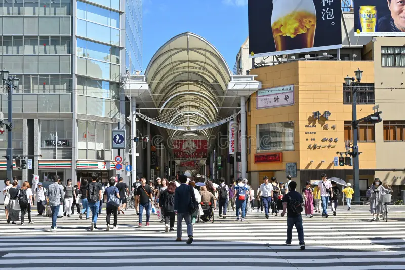
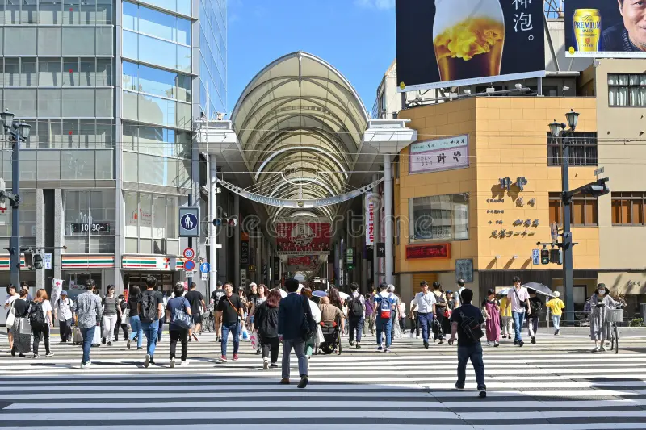

Descubre la majestuosidad del Santuario Itsukushima-jinja, uno de los templos más emblemáticos de Japón y Patrimonio de la Humanidad. Ubicado en la isla de Miyajima, este santuario parece flotar sobre el mar durante la marea alta, creando una vista espectacular con su famoso torii flotante. Rodeado de naturaleza y tradición, representa la armonía entre la espiritualidad y la belleza del paisaje japonés.
Con Viajes Jornada, podrás recorrer sus pasarelas de madera, admirar sus templos y disfrutar del encanto cultural de Miyajima. Vive una experiencia inolvidable explorando uno de los destinos más sagrados y fotogénicos de todo Japón. ¡El Santuario Itsukushima-jinja te espera!

Entre sus destinos imperdibles se encuentran el Museo de la Paz, el Jardín Shukkeien un oasis de tranquilidad y las calles comerciales de Hondori, repletas de tiendas, cafés y boutiques locales. Cada rincón ofrece una mezcla de tradición y modernidad que cautiva a todos los visitantes.

 

La gastronomía de Hiroshima es reconocida por su okonomiyaki al estilo local, preparado con fideos y mariscos frescos, así como por su delicioso ostión asado, un manjar de la región. Los visitantes también pueden disfrutar del sake artesanal producido en Saijo, un distrito famoso por sus bodegas tradicionales.


Nuestro viaje a Hiroshima con la agencia Viajes Jornada fue una experiencia maravillosa. Desde su vibrante vida urbana hasta su rica cultura gastronómica, cada rincón nos ofreció algo nuevo por descubrir. El equipo de Viajes Jornada se encargó de todos los detalles, desde la reserva del hotel hasta las recomendaciones de los mejores lugares para visitar y comer. Recomendamos Viajes Jornada a todos los que deseen vivir una experiencia inolvidable en Japón.
Calcula el costo estimado de tu estadía según la temporada, número de personas y duración del viaje.